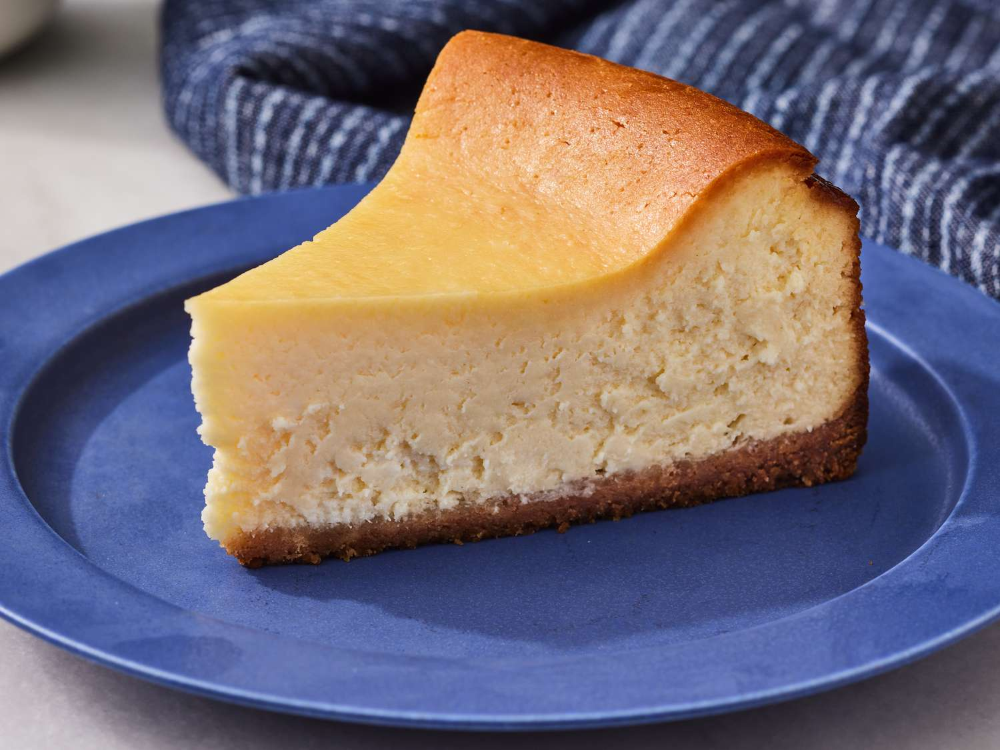

Ingredients:

- 1½ cups graham cracker crumbs, from 12 whole crackers
- 5 tablespoons unsalted butter, melted
- 2 tablespoons sugar
- ⅛ teaspoon salt
- 32 oz (four 8-oz blocks) cream cheese, at room temperature
- 2 cups sugar
- 3 tablespoons all-purpose flour
- 4 teaspoons vanilla extract
- 1 teaspoon packed lemon zest, from 1 lemon
- 2 teaspoons fresh lemon juice, from 1 lemon
- ¼ teaspoon salt
- 6 large eggs
- ½ cup sour cream
Instructions:
- Preheat the oven to 350°F (175°C).
- Wrap a 9- or 10-inch springform pan with one large piece of heavy-duty aluminum foil.
- Press the crumbs into an even layer on the the bottom of the prepared pan.
- Bake the crust for 10 minutes, until set. Remove the pan from the oven and set aside.
- Reduce the oven temperature to 325°F. Set a kettle of water to boil.
- Make the batter: In the bowl of an electric mixer fitted with the paddle attachment or beaters.
- Beat the cream cheese, sugar, and flour together on medium speed until just smooth, about 1 minute.
- Scrape the bottom and sides of the bowl to be sure the mixture is evenly combined.
- Add the vanilla, lemon zest, lemon juice, and salt; beat on low speed until just combined.
- Add the eggs, one at a time, mixing on low speed until incorporated, scraping the bowl as necessary.
- Mix in the sour cream. Make sure the batter is uniform but do not over-mix.
- Pour the batter on top of the crust.
- Bake until the cake is just set, 1 hour and 30 minutes to 1 hour and 45 minutes.
- Cool the cheesecake in the water bath until the water is just warm, about 45 minutes.
- Remove the springform pan from the water bath and discard the foil.
- If necessary, run a thin-bladed knife around the edge of the cake to make sure it's not sticking to the sides